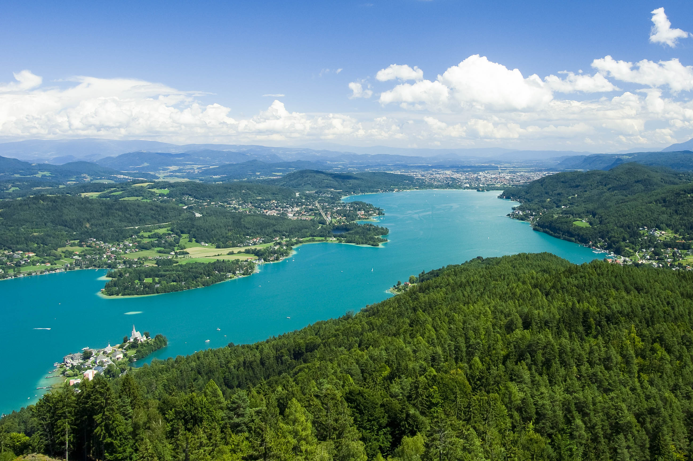
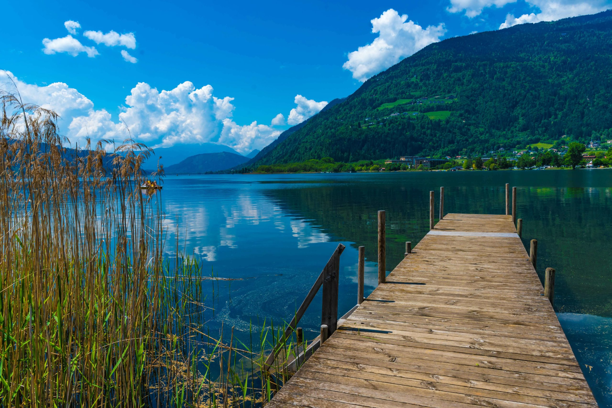
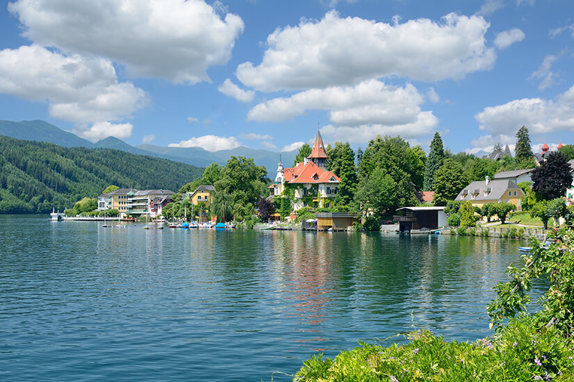

Wörthersee
Der Wörthersee ist der größte See Kärntens und
zählt zu den wärmsten Alpenseen. Mit einer Fläche
von etwa 20km² und einer Länge von rund 17km erstreckt er sich
zwischen den Städten Klagenfurt und Velden. Im Sommer erreicht die
Wassertemperatur bis zu 28°C, was ihn zu einem beliebten Ziel für
Wassersportler und Sonnenanbeter macht.
Öffentliche Badeplätze und freie Seezugänge
Entlang des Wörthersees gibt es zahlreiche öffentliche
Badeplätze und freie Seezugänge, die den direkten Zugang zum
Wasser ermöglichen. Hier sind einige empfehlenswerte Stellen:
-
Edelweißbad in Pörtschach: Direkt an der
Bundesstraße gelegen, bietet dieses Bad einen geschützten Seegrund.
Bitte beachten Sie, dass es hier nur begrenzte Parkmöglichkeiten gibt.
-
Freier Seezugang bei Auen: Etwa 2,5 Kilometer
nach der Auffahrt zum Golfclub Kärnten und Mayr Golfhofel in
Richtung Velden befindet sich dieser freie Seezugang. Die Fläche
ist teilweise von Laubbäumen umgeben und verfügt über eine hölzerne
Sitzbank sowie eine kleine Stiege ins Wasser.
-
Freier Seezugang bei Bad Saag: Am Nordufer direkt
an dem Wörthersee-Radweg (R4) und dem V9 Lake Side Run in der Nähe
von Bad Saag gelegen, bietet dieser Zugang eine ruhige Badegelegenheit.
-
Freier Seezugang bei der Kapuzinerinsel: Ein großer
und in den Sommermonaten stark frequentierter freier Seezugang an der
Wörthersee Straße.

Ossiacher See
Der Ossiacher See ist der drittgrößte See Kärntens
und liegt südlich der Stadt Villach. Mit einer Fläche von etwa 10km² und einer maximalen Tiefe
von 52 Metern bietet er zahlreiche Möglichkeiten für Erholung und Freizeitgestaltung.
Öffentliche Badeplätze und freie Seezugänge
Entlang des Ossiacher Sees gibt es mehrere öffentliche Badeplätze
und freie Seezugänge, die den direkten Zugang zum Wasser ermöglichen.
Hier sind einige empfehlenswerte Stellen:
-
Seebad Bodensdorf: Dieses Seebad
bietet einen großen kostenfreien Seezugang und verfügt
über einen Abenteuer-Kinderspielplatz sowie eine Seeterrasse
mit einer Auswahl an Speisen und Getränken. Kostenpflichtige
Parkplätze stehen direkt vor dem Eingang zur Verfügung.
-
Seezugang bei der Ossiacher See Halle
in Steindorf: Ein unscheinbarer Zugang mit
Parkmöglichkeiten bei der Ossiacher See Halle. Ein
Schotterweg führt direkt zum Seeufer, wo Holzbänke zum Verweilen einladen.
-
"Mini-Strand" in Bodensdorf: Direkt nach dem Ortsende
von Bodensdorf befindet sich an der rechten Seite ein Trafohäuschen.
Nach rechts abbiegen und einem Pfad zwischen zwei Hecken folgen,
erreicht man nach etwa 130 Metern das Seeufer und den freien Seezugang.
-
Freier Seezugang bei der Surf- und Segelschule
Rainer: Bis zum 20. Juni 2024 gibt es hier
einen kostenlosen Zugang zum See, der täglich von 9 bis 19 Uhr
geöffnet ist. Umkleiden und Sanitäranlagen stehen zur Verfügung.

Millstätter See
Der Millstätter See ist der tiefste See Kärntens
und liegt im Herzen der Nockberge. Mit einer Fläche von etwa
13km² und einer maximalen Tiefe von 51 Metern bietet
er kristallklares Wasser und eine malerische Umgebung. Die Region rund
um den See ist bekannt für ihre vielfältigen Freizeitmöglichkeiten und ihre reiche Kulturgeschichte.
Öffentliche Badeplätze und freie Seezugänge
Entlang des Millstätter Sees gibt es mehrere öffentliche
Badeplätze und freie Seezugänge, die den direkten Zugang zum Wasser
ermöglichen. Hier sind einige empfehlenswerte Stellen:
-
Klauberpark in Seeboden: Direkt am Nordufer
gelegen, bietet dieser Park einen freien Seezugang mit Liegewiesen
und schattenspendenden Bäumen.
-
Parkplatz Tschall zwischen Seeboden
und Millstatt: Ein großer Parkplatz ermöglicht
den Zugang zum Seeufer, ideal für einen spontanen Badestopp.
-
Freier Seezugang zwischen Pesenthein und Dellach:
Ein kleiner Parkplatz an der Bundesstraße führt zu einem unverbauten Uferbereich, der zum Baden einlädt.
-
Südufer bei Charly's Seelounge in Döbriach: Etwa 1,5
Kilometer vom Lokal entfernt befindet sich ein freier Seezugang, der zu
Fuß oder mit dem Rad erreichbar ist.
-
Südufer bei Großegg: Direkt am Millstätter
See Radweg gelegen, bietet dieser Zugang eine ruhige Badegelegenheit.
